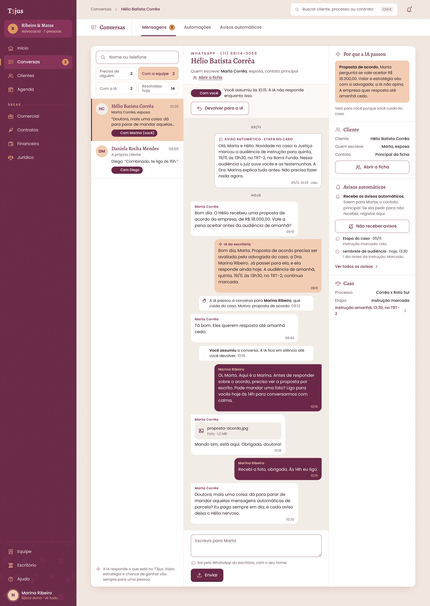
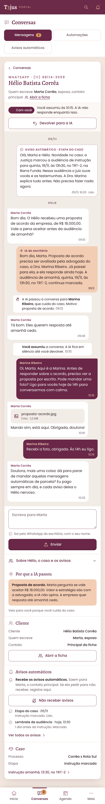

O atalho na conversa
Hélio, conversa assumida por Marina. Marta, a esposa, pede para parar os avisos de parcela. À direita, logo depois de Cliente, a seção “Avisos automáticos” diz que Hélio recebe os avisos e oferece “Não receber avisos”. No celular, a mesma seção fica em “Sobre Hélio, o caso e os avisos”, aqui aberto.
Abrir: conversa-avisos.html?estado=atalho (estreite a janela para ver o celular)